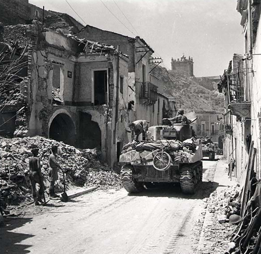
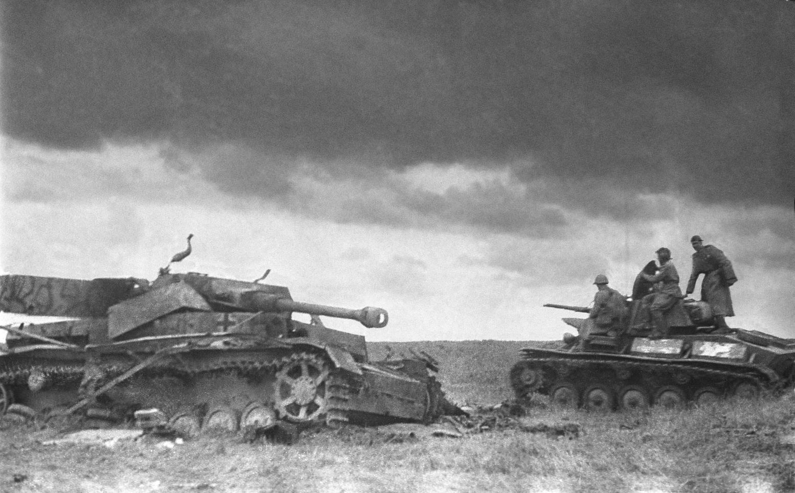

Invasie op Sicilie
 Op 9 juli pleegden de geallieerden een amfibische invasie op het eiland Sicilie. Churchill drong aan Europa te bevrijden vanuit het zuiden, de Balkan, maar de Amerikanen zagen daar niet zoveel in, immers kreeg hij toch zijn zin. Op 3 september 1943 vielen de westerse geallieerden het Italiaanse vasteland binnen, na de wapenstilstand van Italië met de geallieerden. Duitsland reageerde met de hulp van fascisten door Italiaanse troepen te ontwapenen die op veel plaatsen zonder superieure bevelen zaten, de militaire controle over Italiaanse gebieden over te nemen en een reeks verdedigingslinies te creëren. Duitse speciale troepen redden vervolgens Mussolini, die vervolgens al snel een nieuwe marionettenstaat vestigde in het door Duitsland bezette Italië, de Italiaanse Sociale Republiek genaamd, wat een Italiaanse burgeroorlog veroorzaakte. De westelijke geallieerden vochten door verschillende linies totdat ze midden november de belangrijkste Duitse verdedigingslinie bereikten.
Slag bij Kursk
 Halverwege november hadden de Duitsers Stalingrad bijna ingenomen in bittere straatgevechten. De Sovjets begonnen aan hun tweede winter-tegenoffensief, te beginnen met een omsingeling van Duitse troepen bij Stalingrad en een aanval op de Rzhev-saillant nabij Moskou, hoewel deze laatste rampzalig mislukte. Begin februari 1943 had het Duitse leger enorme verliezen geleden; De Duitse troepen bij Stalingrad waren verslagen en de frontlinie was voor het zomeroffensief uit zijn positie teruggedrongen. Half februari, nadat de Sovjet-opmars was afgenomen, lanceerden de Duitsers een nieuwe aanval op Kharkov, waarmee ze een saillant vormden in hun frontlinie rond de Sovjetstad Koersk. Op 4 juli 1943 viel Duitsland Sovjet-troepen aan rond de Koersk saillant. Binnen een week hadden de Duitse troepen zich uitgeput tegen de diepgewortelde en goed opgebouwde verdediging van de Sovjets, en voor het eerst in de oorlog annuleerde Hitler de operatie voordat deze tactisch of operationeel succes had behaald. Deze beslissing werd gedeeltelijk beïnvloed door de invasie van Sicilië door de westerse geallieerden op 9 juli, die, in combinatie met eerdere Italiaanse mislukkingen, resulteerde in de afzetting en arrestatie van Mussolini later die maand.